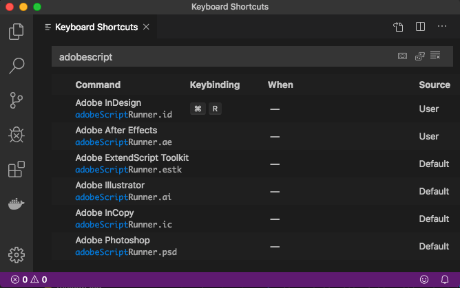

Getting Started Scripting in InDesign
This tutorial will cover how set up the environment to start writing scripts to use in InDesign.
Setup
First, download Visual Studio Code, which is where you'll be writing all of your code. You'll also need to install the Adobe Script Runner extension.
By default, Adobe Script Runner is set up for After Effects. To configure it for InDesign, open Keyboard Shortcuts, search for "adobescriptrunner", and reset the keybinding for Command+R to be for InDesign. Refer to this guide for help with binding keyboard shortcuts.
Sample Script
Now it's time to write your first script! Now's the time to make sure you have InDesign open.
Open a new text file (Command+N), and paste the script below into it.
alert("Hello World")
When you press Command+R, you should get this popup in InDesign.

And that's all there is to it! Happy coding!